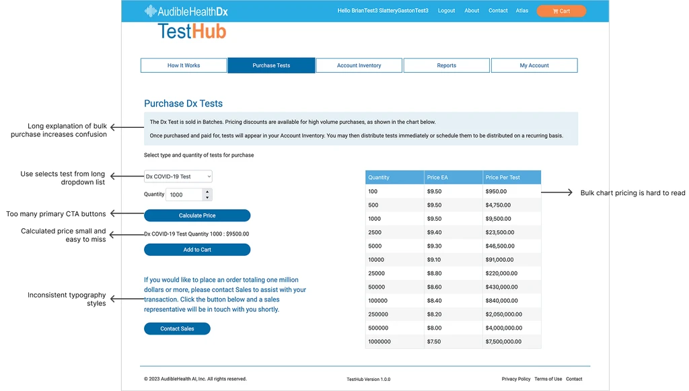
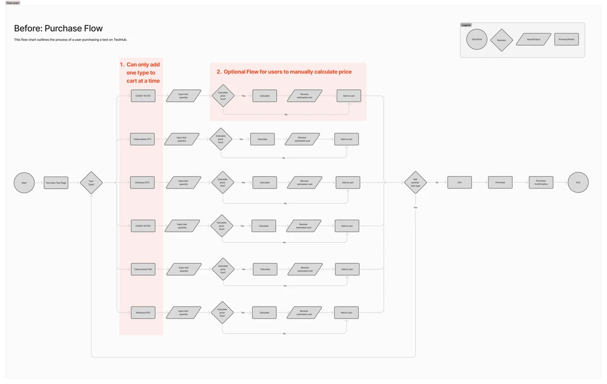
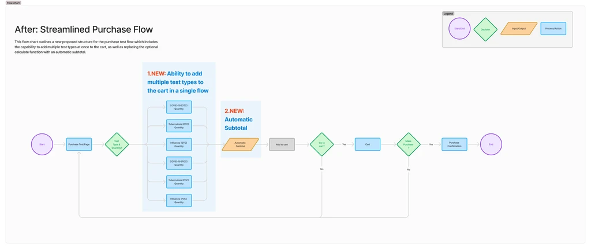
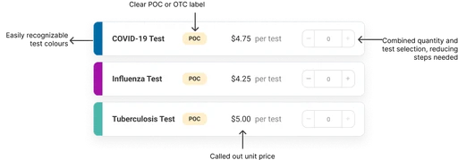

A B2B platform for respiratory healthcare, held back by its own purchase flow
TestHub is a B2B platform that enables healthcare providers to send patients digital respiratory tests and view their results. While the core product was strong, the purchasing flow was creating friction that was directly impacting order volume. The redesign focused on streamlining that experience, ultimately reducing purchase time by 60%.
ProcessA structured approach from discovery to delivery
- User Interviews
- Usability Tests
- Competitive Analysis
- User Journey Map
- Persona
- Pain Point Analysis
- Wireframes
- Lo-Fi Mockups
- Stakeholder Feedback
- Hi-Fi Mockups
- Developer Hand-off
- Follow-up Testing
Purchasing tests on TestHub is difficult, resulting in fewer and lower volume orders
Primary users are small to medium healthcare providers specialising in respiratory care. They need simplicity and efficient bulk purchasing capabilities — but the existing flow made both difficult.
Users could only add one test type at a time, forcing them to repeat the entire purchase flow for each item.
A manual calculation button for subtotals was often missed or misunderstood, leaving users unsure of their total.
The disjointed process actively discouraged bulk purchases, limiting order volume and revenue.

User FlowMapping the end-to-end purchase experience
Users must go through separate flows for each test type being added to the cart, as there is no existing infrastructure to allow multiple test types to be added in the same instance. This results in a long and frustrating experience.
If users want to see their order subtotal, they must manually select "Calculate" — a step that is often missed or misunderstood. This leaves users unsure about the cost and more likely to abandon their cart.

Proposed Streamlined Flow
To reduce user friction and align with common e-commerce patterns, I redesigned the task flow to allow adding multiple test types to the cart in one session. This simplified the purchase process and minimized repetition. Although the current system couldn't support it initially, discussions with leadership and developers confirmed its long-term value for both users and the business.

SolutionA streamlined purchase flow built for providers ordering at scale
Three focused changes addressed the core pain points without overhauling the broader platform.
Multi-select test cards
Replaced dropdown menus with visual test cards that use colour associations to make selection faster and more intuitive. Users can now add multiple test types in a single flow rather than repeating the process for each.
Before

After

Dynamic bulk pricing table
Added a bulk pricing table that shows discount tiers clearly, giving providers the information they need to confidently order at volume. Pricing visibility directly encourages larger orders.
Before

After
Automatic real-time subtotals
Removed the manual calculation button entirely. Subtotals now update automatically as users adjust quantities, eliminating confusion and building trust through transparent, real-time pricing.
Before

After

Faster purchases, higher satisfaction, bigger orders
Follow-up usability testing and order data confirmed the redesign delivered measurable improvements across every key metric.
↓ 60%
Faster purchase completion
80%
Average user satisfaction
2×
Increase in average order volume
What I learned
Managing scope creep in enterprise products
This project reinforced how much scope creep can quietly derail a focused redesign in complex enterprise products. Staying anchored to the specific user pain points — rather than trying to fix everything at once — was what allowed us to ship meaningful improvements within the timeline.
Applying e-commerce UI patterns in B2B
I also learned a lot about applying e-commerce psychology in a B2B context. Building trust through consistent design patterns, transparent pricing, and reducing cognitive load at the point of purchase are principles that translate directly from consumer products — and they worked here too.